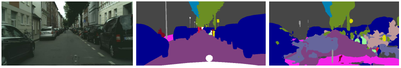
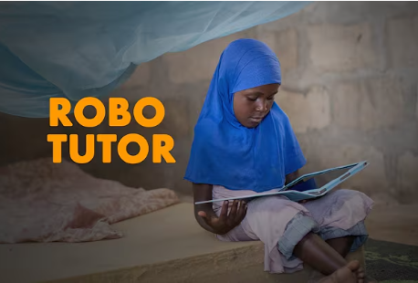
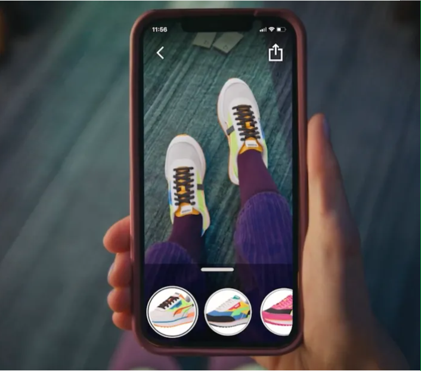

{kind=link}
Research |

|
Generative Interventions for Causal Learning
Chengzhi Mao, Augustine Cha*, Amogh Gupta*, Hao Wang, Junfeng Yang, Carl Vondrick CVPR, 2021 paper / code Proposed framework by steering in latent space of GANs to mitigate spurious correlations in image classification. |
|  |
Multi-Task Learning Strengthens Adversarial Robustness
Chengzhi Mao, Amogh Gupta*, Vikram Nitin*, Baishakhi Ray, Shuran Song, Junfeng Yang, Carl Vondrick ECCV, 2020 (Oral Presentation) paper / code Showed that multi-task learning can make deep learning models robust in 11 computer vision tasks such as semantic segmentation, depth estimation etc. |
|  |
RoboTutor
website / video / code RoboTutor is an open-source Android tablet app that enables children ages 7-10 with little or no access to schools to learn basic reading, writing, and arithmetic without adult assistance. It was one of five finalists in XPrize Global Learning Challenge. |
Industry |
|  |
AR - Virtual Shoe Try-On
website / video Press: TechCrunch |
Patents |
|
Virtual Shoe Try-On - U.S. Patent No. 11,978,174
[Link]
Yuelong Li, Gitika Karumuri, Miriam Bellver, Sunil Hadap, Ashwin Swaminathan, Amogh Gupta, Xin Shen Reducing False Positives Based on Classification and Segmentation Cues - U.S. Patent No. 12,211,090 [Link] Gitika Karumuri, Miriam Bellver, Amogh Gupta, Ashwin Swaminathan, Sunil Hadap, Yuelong Li, Xin Shen |